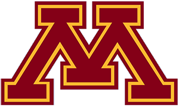
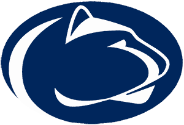

Big Ten
Wisconsin
Wisconsin is 6-0-0 and 3rd in the NPI. Across 500 simulated seasons its median NPI finish is 6th, with a 95% range of 1st to 23rd. ELO expects about 6 wins in the next 10.
Next 10 games
- Thu, Nov 5

at Minnesota59% - Sat, Nov 7at Minnesota59%
- Fri, Nov 13vs Ohio State70%
- Sat, Nov 14vs Ohio State70%
- Fri, Nov 20

vs Penn State71% - Sat, Nov 21vs Penn State71%
- Sat, Nov 28
 vs Canisius76%
vs Canisius76% - Sun, Nov 29vs Canisius76%
- Fri, Dec 4at Michigan35%
- Sat, Dec 5at Michigan35%
Win chances from ELO; the dot is stronger the more lopsided the game.
Projected NPI finish
500 simulated seasons, remaining games decided by ELO win chances. Dashed line: median. Shaded: 95% range.